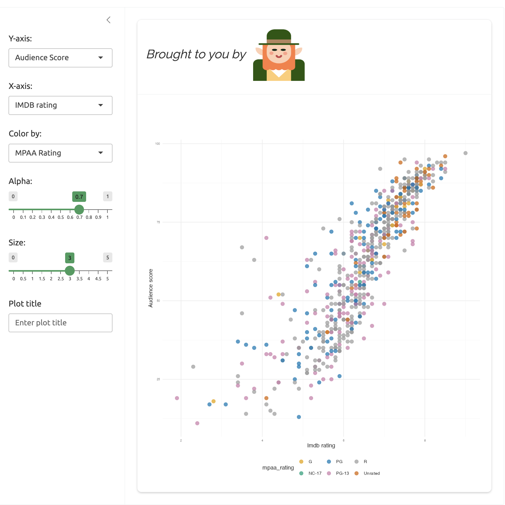

install.packages("leprechaun")
library(leprechaun)leprechaun
 The
The leprechaun framework
Helper functions for creating modules,
app.Rfiles, JavaScript, CSS, SCSS, HTML, etc.Apps come ‘pre-packaged’ with UI, server, and standalone app functions
Add functionality with a variety of
use_*functions that are ‘bundled’ into theinst/folder:use_sass(),use_config(),use_packer()(withuse_js_utils()), etc.
leprechaunhelps keep your app-package dependencies low (thinkgolemà la carte)
This chapter walks through building a version of the moviesApp with the leprechaun framework. The resulting app-package (lap) is in the fw_lap branch.

After checking out the fw_lap branch, be sure to load, document, and install the application.
Ctrl/Cmd + Shift + L / D / B
lap (a leprechaun app-package)
lap exports the movies data and the standalone app function, run().
library(lap)
lap::run()
lap movies applap, launch the movies with run()Set up
Create new leprechaun app-packages with usethis::create_package('lap'). After the package is created, leprechaun::scaffold() 1 builds the core app files:2
R
├── _disable_autoload.R
├── assets.R
├── input-handlers.R
├── leprechaun-utils.R
├── run.R
├── server.R
├── ui.R
└── zzz.R
1 directory, 8 files- 1
-
Disables
shiny::loadSupport()
- 2
- Includes functions for serving JavaScript files, adding/removing modules, and collapsing files.
- 3
-
Utility functions for handling
lists anddata.frames
- 4
-
Contains the
make_send_message()function for ‘send[ing] custom messages to the front-end’ - 5
-
Standalone app function
- 6
-
App primary server function
- 7
-
App primary ui function
- 8
- Includes wrapper for adding external files
A .leprechaun lock file is created, and shiny, bslib, htmltools and pkgload are added to the DESCRIPTION.
Imports:
bslib,
htmltools,
shiny
Suggests:
pkgloadThe lap folder structure should look familiar if you’ve been following along with the previous chapters. The standard R package files and folders (DESCRIPTION, NAMESPACE, R/, and .Rproj) are accompanied by inst/ sub-folders (recall that inst/ contents are available when the package is installed).
App code
- Code files: new code files in
leprechaunapps can be created withusethis::use_r()or withleprechaun’s helper functions.
- Modules: Add modules with
leprechaun::add_module("name")3
- Module files created with
add_module()have amodule_prefix.
- Module files created with
- Run:
R/run.Rcontains functions for running the app.4 - UI and server: Add the modules to
R/ui.RandR/server.R.
- Utility function:
R/utils_scatter_plot.Rholds thescatter_plot()utility function.7 - Adding external files: The
R/zzz.Rfile contains the.onLoad()function 8 app.Rfile: include anapp.Rin the root directory usingadd_app_file()9
- Modules: Add modules with
R
├── module_plot_display.R
├── module_var_input.R
├── run.R
├── server.R
├── ui.R
└── utils_scatter_plot.R
1 directory, 6 filesApp files
The initial call to leprechaun::scaffold() creates the following folders in the inst/ folder
inst
├── assets
├── dev
├── img
└── run
└── app.R
5 directories, 1 fileThe inst/run/app.R looks like a standard app.R file, but it’s not.10
Data files
- Including data files: the
movies.RDatadata was moved intoinst/extdata, then loaded intodata/with the script created withusethis::use_data_raw('movies'):
data-raw/
└── movies.R
1 directory, 1 file└── extdata
└── movies.RData
1 directory, 1 filedata
└── movies.rda
1 directory, 1 fileleprechaun features
The leprechaun workflow involves a combination of use_ functions that are combined with leprechaun::build() to add various functionality to your application. I’ll demonstrate three options in the sections below:
Use packer
I’ll demo using the make_send_message() from the JavaScript example on the package website:
- Run
packer::scaffold_leprechaun()
- Initializes
npm, addsnpmscripts, createssrcjs,srcjs/config,webpack,webpack-cli, andwebpack-merge
- Initializes
- Run
leprechaun::use_packer() - Run
leprechaun::build()
This creates inst/dev/packer.R and inst/assets/index.js.11
inst
├── assets
│ └── index.js
├── dev
│ └── packer.R
├── extdata
│ └── movies.RData
├── img
└── run
└── app.RAssign the output from make_send_message() to send_message() in R/server.R, then pass the msgId and text of the message:
server <- function(input, output, session){
## New code -->
send_message <- make_send_message(session)
send_message("show-packer",
text = "this message is from your R/server.R file")
selected_vars <- var_input_server("vars")
plot_display_server("plot", var_inputs = selected_vars)
## New code <--
}- 1
-
Create
send_message()
- 2
-
Use
send_message()to send message the UI.
After loading, documenting, and installing your app-package:
Ctrl/Cmd + Shift + L / D / B
Run the application:
lap::run()
send_message() in lap::run()make_send_message() functionality to R/server.RAdd images
I’ll demonstrate adding an image file (leprechaun.jpg) to the UI function.
- Place the
leprechaun.jpgfile ininst/img/ - Add the
img/path to the code to UI:
tags$img(
src = "img/leprechaun.jpg",
height = "25%",
width = "25%")- run
devtools::load_all(),devtools::document(), anddevtools::install(), then run the application withrun():
Ctrl/Cmd + Shift + L / D / B
lap::run()
leprechaun.jpg in R/ui.Rinst/img/Use Sass
To add Sass styling, I can use leprechaun’s use_sass() function
- Run
leprechaun::use_sass()
- a
scss/folder will be created that contains_core.scssandmain.scss
- a
scss
├── _core.scss
└── main.scss
1 directory, 2 files- The original
_core.scssfile is below
html{
.error {
color: red
}
}- Change the
color:fromredto green (#38B44A) using$accent: #38B44A;
$accent: #38B44A;
html{
h1 {
color: $accent;
}
}- Save this file and run
leprechaun::build():12
leprechaun::build()✔ Running packer.R
✔ Bundled
✔ Running sass.R- Once again, run
devtools::load_all(),devtools::document(), anddevtools::install(), then run the application withrun():
Ctrl/Cmd + Shift + L / D / B
lap::run()
lap with new SassTests
leprechaun doesn’t any specific support for testing (like the golem framework), but we can create tests using any combination of testthat, testServer(), and shinytest2.
lap dependencies
It’s also worth noting that using the leprechaun framework doesn’t add itself as a dependency:
expand to see the lap dependency tree
local::. 0.0.0.9000 ✨👷🏾♂️ ⬇ (unknown size)
├─bslib 0.5.1 ✨ ⬇ (5.90 MB)
│ ├─base64enc 0.1-3 ✨
│ ├─cachem 1.0.8 ✨ ⬇ (69.43 kB)
│ │ ├─rlang 1.1.1 ✨
│ │ └─fastmap 1.1.1 ✨ ⬇ (201.10 kB)
│ ├─htmltools 0.5.6.1 ✨ ⬇ (355.95 kB)
│ │ ├─digest 0.6.33 ✨ ⬇ (297.88 kB)
│ │ ├─base64enc
│ │ ├─rlang
│ │ ├─fastmap
│ │ └─ellipsis 0.3.2 ✨
│ │ └─rlang
│ ├─jquerylib 0.1.4 ✨ ⬇ (526.36 kB)
│ │ └─htmltools
│ ├─jsonlite 1.8.7 ✨ ⬇ (1.13 MB)
│ ├─memoise 2.0.1 ✨ ⬇ (47.96 kB)
│ │ ├─rlang
│ │ └─cachem
│ ├─mime 0.12 ✨
│ ├─rlang
│ └─sass 0.4.7 ✨ ⬇ (2.41 MB)
│ ├─fs 1.6.3 ✨ ⬇ (625.41 kB)
│ ├─rlang
│ ├─htmltools
│ ├─R6 2.5.1 ✨ ⬇ (83.05 kB)
│ └─rappdirs 0.3.3 ✨
├─ggplot2 3.4.4 ✨
│ ├─cli 3.6.1 ✨
│ ├─glue 1.6.2 ✨
│ ├─gtable 0.3.4 ✨
│ │ ├─cli
│ │ ├─glue
│ │ ├─lifecycle 1.0.3 ✨ ⬇ (123.60 kB)
│ │ │ ├─cli
│ │ │ ├─glue
│ │ │ └─rlang
│ │ └─rlang
│ ├─isoband 0.2.7 ✨
│ ├─lifecycle
│ ├─MASS 7.3-60 < 7.3-60.1 ✋
│ ├─mgcv 1.9-0
│ │ ├─Matrix 1.6-1.1
│ │ │ └─lattice 0.22-5
│ │ └─nlme 3.1-163
│ │ └─lattice
│ ├─rlang
│ ├─scales 1.2.1 ✨
│ │ ├─farver 2.1.1 ✨
│ │ ├─labeling 0.4.3 ✨
│ │ ├─lifecycle
│ │ ├─munsell 0.5.0 ✨
│ │ │ └─colorspace 2.1-0 ✨
│ │ ├─R6
│ │ ├─RColorBrewer 1.1-3 ✨
│ │ ├─rlang
│ │ └─viridisLite 0.4.2 ✨
│ ├─tibble 3.2.1 ✨
│ │ ├─fansi 1.0.5 ✨
│ │ ├─lifecycle
│ │ ├─magrittr 2.0.3 ✨
│ │ ├─pillar 1.9.0 ✨
│ │ │ ├─cli
│ │ │ ├─fansi
│ │ │ ├─glue
│ │ │ ├─lifecycle
│ │ │ ├─rlang
│ │ │ ├─utf8 1.2.4 ✨
│ │ │ └─vctrs 0.6.4 ✨
│ │ │ ├─cli
│ │ │ ├─glue
│ │ │ ├─lifecycle
│ │ │ └─rlang
│ │ ├─pkgconfig 2.0.3 ✨
│ │ ├─rlang
│ │ └─vctrs
│ ├─vctrs
│ └─withr 2.5.2 ✨ ⬇ (230.90 kB)
├─htmltools
├─rlang
└─shiny 1.7.5.1 ✨ ⬇ (4.35 MB)
├─httpuv 1.6.12 ✨ ⬇ (2.66 MB)
│ ├─later 1.3.1 ✨ ⬇ (607.27 kB)
│ │ ├─Rcpp 1.0.11 ✨ ⬇ (3.31 MB)
│ │ └─rlang
│ ├─promises 1.2.1 ✨ ⬇ (1.82 MB)
│ │ ├─fastmap
│ │ ├─later
│ │ ├─magrittr
│ │ ├─R6
│ │ ├─Rcpp
│ │ └─rlang
│ ├─R6
│ └─Rcpp
├─mime
├─jsonlite
├─xtable 1.8-4 ✨ ⬇ (701.99 kB)
├─fontawesome 0.5.2 ✨ ⬇ (1.36 MB)
│ ├─rlang
│ └─htmltools
├─htmltools
├─R6
├─sourcetools 0.1.7-1 ✨ ⬇ (137.44 kB)
├─later
├─promises
├─crayon 1.5.2 ✨
├─rlang
├─fastmap
├─withr
├─commonmark 1.9.0 ✨ ⬇ (357.18 kB)
├─glue
├─bslib
├─cachem
├─ellipsis
└─lifecycle
Key: ✨ new | ✋ outdated | ⬇ download | 👷🏾♂️ buildmoviesApp dependencies
For comparison, this is the moviesApp dependency tree (note that using devtools/usethis doesn’t make our app-package depend on these packages).
expand to see the moviesApp dependency tree
local::. 0.0.0.9000 ✨👷♀️ ⬇ (unknown size)
├─bslib 0.5.1 ✨ ⬇ (5.90 MB)
│ ├─base64enc 0.1-3 ✨
│ ├─cachem 1.0.8 ✨ ⬇ (69.43 kB)
│ │ ├─rlang 1.1.1 ✨
│ │ └─fastmap 1.1.1 ✨ ⬇ (201.10 kB)
│ ├─htmltools 0.5.6.1 ✨ ⬇ (355.95 kB)
│ │ ├─digest 0.6.33 ✨ ⬇ (297.88 kB)
│ │ ├─base64enc
│ │ ├─rlang
│ │ ├─fastmap
│ │ └─ellipsis 0.3.2 ✨
│ │ └─rlang
│ ├─jquerylib 0.1.4 ✨ ⬇ (526.36 kB)
│ │ └─htmltools
│ ├─jsonlite 1.8.7 ✨ ⬇ (1.13 MB)
│ ├─memoise 2.0.1 ✨ ⬇ (47.96 kB)
│ │ ├─rlang
│ │ └─cachem
│ ├─mime 0.12 ✨
│ ├─rlang
│ └─sass 0.4.7 ✨ ⬇ (2.41 MB)
│ ├─fs 1.6.3 ✨ ⬇ (625.41 kB)
│ ├─rlang
│ ├─htmltools
│ ├─R6 2.5.1 ✨ ⬇ (83.05 kB)
│ └─rappdirs 0.3.3 ✨
├─ggplot2 3.4.4 ✨
│ ├─cli 3.6.1 ✨
│ ├─glue 1.6.2 ✨
│ ├─gtable 0.3.4 ✨
│ │ ├─cli
│ │ ├─glue
│ │ ├─lifecycle 1.0.3 ✨ ⬇ (123.60 kB)
│ │ │ ├─cli
│ │ │ ├─glue
│ │ │ └─rlang
│ │ └─rlang
│ ├─isoband 0.2.7 ✨
│ ├─lifecycle
│ ├─MASS 7.3-60 < 7.3-60.1 ✋
│ ├─mgcv 1.9-0
│ │ ├─Matrix 1.6-1.1
│ │ │ └─lattice 0.22-5
│ │ └─nlme 3.1-163
│ │ └─lattice
│ ├─rlang
│ ├─scales 1.2.1 ✨
│ │ ├─farver 2.1.1 ✨
│ │ ├─labeling 0.4.3 ✨
│ │ ├─lifecycle
│ │ ├─munsell 0.5.0 ✨
│ │ │ └─colorspace 2.1-0 ✨
│ │ ├─R6
│ │ ├─RColorBrewer 1.1-3 ✨
│ │ ├─rlang
│ │ └─viridisLite 0.4.2 ✨
│ ├─tibble 3.2.1 ✨
│ │ ├─fansi 1.0.5 ✨
│ │ ├─lifecycle
│ │ ├─magrittr 2.0.3 ✨
│ │ ├─pillar 1.9.0 ✨
│ │ │ ├─cli
│ │ │ ├─fansi
│ │ │ ├─glue
│ │ │ ├─lifecycle
│ │ │ ├─rlang
│ │ │ ├─utf8 1.2.4 ✨
│ │ │ └─vctrs 0.6.4 ✨
│ │ │ ├─cli
│ │ │ ├─glue
│ │ │ ├─lifecycle
│ │ │ └─rlang
│ │ ├─pkgconfig 2.0.3 ✨
│ │ ├─rlang
│ │ └─vctrs
│ ├─vctrs
│ └─withr 2.5.2 ✨👷♀️ ⬇ (102.32 kB)
├─rlang
├─sass
├─shiny 1.7.5.1 ✨ ⬇ (4.35 MB)
│ ├─httpuv 1.6.12 ✨ ⬇ (2.66 MB)
│ │ ├─later 1.3.1 ✨ ⬇ (607.27 kB)
│ │ │ ├─Rcpp 1.0.11 ✨ ⬇ (3.31 MB)
│ │ │ └─rlang
│ │ ├─promises 1.2.1 ✨ ⬇ (1.82 MB)
│ │ │ ├─fastmap
│ │ │ ├─later
│ │ │ ├─magrittr
│ │ │ ├─R6
│ │ │ ├─Rcpp
│ │ │ └─rlang
│ │ ├─R6
│ │ └─Rcpp
│ ├─mime
│ ├─jsonlite
│ ├─xtable 1.8-4 ✨ ⬇ (701.99 kB)
│ ├─fontawesome 0.5.2 ✨ ⬇ (1.36 MB)
│ │ ├─rlang
│ │ └─htmltools
│ ├─htmltools
│ ├─R6
│ ├─sourcetools 0.1.7-1 ✨ ⬇ (137.44 kB)
│ ├─later
│ ├─promises
│ ├─crayon 1.5.2 ✨
│ ├─rlang
│ ├─fastmap
│ ├─withr
│ ├─commonmark 1.9.0 ✨ ⬇ (357.18 kB)
│ ├─glue
│ ├─bslib
│ ├─cachem
│ ├─ellipsis
│ └─lifecycle
├─shinythemes 1.2.0 ✨ ⬇ (978.51 kB)
│ └─shiny
└─stringr 1.5.0 ✨ ⬇ (311.21 kB)
├─cli
├─glue
├─lifecycle
├─magrittr
├─rlang
├─stringi 1.7.12 ✨ ⬇ (14.63 MB)
└─vctrs
Key: ✨ new | ✋ outdated | ⬇ download | 👷♀️ buildRecap
leprechaun apps are built using the same methods as app-packages (devtools and usethis), and are intended to be a ‘leaner and smaller’ version of golem.
“it generates code and does not make itself a dependency of the application you build; this means applications are leaner, and smaller”
leprechaun is similar to golem in that it ‘bundles’ various app-package development functions into helper/utility functions. For example, the .onLoad() function is a wrapper for:
shiny::addResourcePath("img", system.file("img", package = "lap")).onLoad() saves some time because you won’t have to add the code above to the UI (at the cost of making your app code less clear and explicit).
leprechaun also relies on external packages like packer to integrate and bundle external code files, so becoming more familiar with these packages will extend what you can build with leprechaun.
leprechaun::scaffold()has arguments forui(fluidPageornavbarPage)bs_version(bootstrap version) andoverwrite(if you need to start over).↩︎Remember to provide a list of fields to
usethis::create_package()for theDESCRIPTIONfile (or edit this manually).↩︎leprechaunmodules created withadd_module()have the following naming convention:leprechaun::add_module("name")createsvar_inputUI()andvar_input_server().↩︎R/run.Rincludes functions for running the production (run()) and development (run_dev()) version of the application.↩︎make_send_message()is inR/leprechaun-utils.R.↩︎assets()loads the resources called in theR/assets.Rfile with theserveAssets()function.↩︎The same
scatter_plot()function frommoviesApp(i.e, imports.datafromrlang)↩︎.onLoad()is a wrapper forshiny::addResourcePath('img', system.file('img', package = 'lap'))↩︎the
app.Rfile includes a call topkgload::load_all().↩︎inst/run/app.Rcontains a call toleprechaun::build(), thenpkgload::load_all().↩︎Using
packerwill download multiple folders into yourleprechaunapp package root folder (srcjs/,node_modules/,package-lock.json,package.json,webpack.common.js,webpack.dev.js,webpack.prod.js). These are not necessary and can be removed (but do not removeinst/dev/packer.Randinst/assets/index.js).↩︎The
scssfolder is added to the root directory, but after runningleprechaun::build()and creatinginst/dev/sass.R, this folder can be removed.↩︎